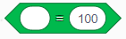

LEGO Spike Prime 2025
Verbinden
🠊
Verbindt de Spike-hub met de computer via Bluetooth. Volg de stappen die in de LEGO Spike app
getoond worden :
- druk op de groene knop van de Spike-hub
- druk op de bluetooth knop van de Spike-hub
- de hub verschijnt nu in de app , klik op "verbinding maken"
De witte bol brengt je naar een overzicht van de Spike-hub. Recht zie je een beknopt overzicht van
de
aangesloten sensoren en motoren.

In de Spike-hub zit een gyroscoop. Deze kan gebruikt worden om de oriëntatie van de hub te bepalen.
Per sensor krijg je de waarde van de sensor te zien en kan je de ander waarden opvragen die door deze sensor kunnen gemeten worden.
Per motor krijg je de huidige positie te zien en kan je de andere waarden opvragen die door deze motor kunnen gemeten worden.
- De yaw is de draaiing rond de verticale as.
- De pitch is de kanteling voor-achter
- De roll is de kanteling links-rechts
Per sensor krijg je de waarde van de sensor te zien en kan je de ander waarden opvragen die door deze sensor kunnen gemeten worden.
Per motor krijg je de huidige positie te zien en kan je de andere waarden opvragen die door deze motor kunnen gemeten worden.
Motoren
Vertelt de motor die is aangesloten op pin "A" om in een "wijzerzin" richting te draaien voor "1"
"rotatie".
Pin "A" kan worden gewijzigd, evenals de draairichting van de motor, de meeteenheid van "rotaties" naar "seconden" of "graden", evenals de hoeveelheid van de eenheid.
Pin "A" kan worden gewijzigd, evenals de draairichting van de motor, de meeteenheid van "rotaties" naar "seconden" of "graden", evenals de hoeveelheid van de eenheid.

Vertelt de motor die is aangesloten op pin "A" om het kortste pad naar positie "0" af te leggen.
Het "kortste pad" kan worden gewijzigd in "rechtsom" (met de klok mee) of "linkesom" (tegen de klok in), evenals de opgegeven positie in graden.
Het "kortste pad" kan worden gewijzigd in "rechtsom" (met de klok mee) of "linkesom" (tegen de klok in), evenals de opgegeven positie in graden.

Start de motor die is aangesloten op pin "A" om in een richting "met de klok mee" te draaien.
De richting kan worden gewijzigd in "tegen de klok in".
De richting kan worden gewijzigd in "tegen de klok in".
Stopt de motor die is aangesloten op pin "A".

Stelt de snelheid van de motor die is aangesloten op pin "A" in op "75%" van de maximale snelheid.

Een variabele die de huidige positie van de motor die is aangesloten op pin "A" bevat.

Een variabele die de huidige snelheid van de motor die is aangesloten op pin "A" bevat.
Beweging
Stelt de twee pinnen in, die zullen gebruikt worden voor beweging, op "pin A" en "pin B".
De pinnen kunnen worden gewijzigd naar elke andere pin die beschikbaar is op de Spike-hub. Let erop dat de draairichting van de motoren kan verschillen afhankelijk van de positionering op de robot. Deze blok moet altijd gebruikt worden voordat een ander bewegingsblok wordt gebruikt.
De pinnen kunnen worden gewijzigd naar elke andere pin die beschikbaar is op de Spike-hub. Let erop dat de draairichting van de motoren kan verschillen afhankelijk van de positionering op de robot. Deze blok moet altijd gebruikt worden voordat een ander bewegingsblok wordt gebruikt.
Stelt de omtrek in van de wielen die gebruikt worden voor beweging op "17.5 cm".
De omtrek kan worden gewijzigd afhankelijk van de wielen die gebruikt worden op de robot. De meeteenheid kan worden gewijzigd tussen "cm" en "inches". De standaardwaarde is 17.5 cm. Kies je voor de "standaarwielen" van LEGO, dan is de omtrek 17.5 cm en moet je deze blok dus niet gebruiken.
De omtrek kan worden gewijzigd afhankelijk van de wielen die gebruikt worden op de robot. De meeteenheid kan worden gewijzigd tussen "cm" en "inches". De standaardwaarde is 17.5 cm. Kies je voor de "standaarwielen" van LEGO, dan is de omtrek 17.5 cm en moet je deze blok dus niet gebruiken.

Beweeg "vooruit" voor "10" "rotaties".
De richting kan worden gewijzigd tussen "vooruit", "achteruit". De meeteenheid kan worden gewijzigd tussen "cm", "inches", "rotaties", "graden" of "seconden".
De richting kan worden gewijzigd tussen "vooruit", "achteruit". De meeteenheid kan worden gewijzigd tussen "cm", "inches", "rotaties", "graden" of "seconden".

Start de robot in de richting "vooruit".
De richting kan worden gewijzigd naar "achteruit".
De richting kan worden gewijzigd naar "achteruit".

Beweeg "rechts: 30" voor "10" "rotaties".
De richting kan worden gewijzigd van "rechts: 100" naar "links : -100", waarbij hoe groter de absolute waarde, hoe meer in die richting de beweging zal zijn. De meeteenheid kan worden gewijzigd tussen "rotaties", "graden" of "seconden".
De richting kan worden gewijzigd van "rechts: 100" naar "links : -100", waarbij hoe groter de absolute waarde, hoe meer in die richting de beweging zal zijn. De meeteenheid kan worden gewijzigd tussen "rotaties", "graden" of "seconden".

Beweeg "rechts: 30".
De richting kan worden gewijzigd van "rechts: 100" naar "links : -100".
De richting kan worden gewijzigd van "rechts: 100" naar "links : -100".

Stopt de robot.

Stelt de bewegingssnelheid in op "50%" van de maximale snelheid.
Licht
Schakelt de LED's bovenop de Spike-hub in. Toon het door de gebruiker opgegeven patroon.
Elk van de 5x5 pixels kan individueel worden gewijzigd in verschillende helderheidsgraden.
Elk van de 5x5 pixels kan individueel worden gewijzigd in verschillende helderheidsgraden.
 voor een specifieke duur
voor een specifieke duur
voor onbepaalde duur

Schrijft het bericht "Hello" met behulp van de LED's bovenop de Spike-hub.
Schakelt alle pixels bovenop de Spike-hub uit.

Stelt de helderheid van alle pixels in op "75%" van de maximale helderheid.
Stelt de pixel op positie "1", "1" in op "100%" helderheid.
Elke pixel op de Spike-hub kan worden gewijzigd door de juiste coördinaten te selecteren. De helderheid kan ook variëren tussen 0% en 100%.
Elke pixel op de Spike-hub kan worden gewijzigd door de juiste coördinaten te selecteren. De helderheid kan ook variëren tussen 0% en 100%.
Roteer de LED's bovenop de Spike-hub met 90° naar "links" of "rechts".
Roteerd de LED's bovenop de Spike-hub in een benoemde richting : "rechtop", "links", "rechts" of
"omgekeerd".
Stelt de middelste knop op de Spike-hub in om in "rood" op te lichten.
De kleur kan worden gewijzigd tussen "violet", "blauw", "groen", "geel", "rood", "wit" , ... of "geen kleur".
De kleur kan worden gewijzigd tussen "violet", "blauw", "groen", "geel", "rood", "wit" , ... of "geen kleur".

Stelt de LED's op de afstandssensor, die is aangesloten op pin "A", in op het opgegeven patroon.
Geluid

Speelt het geluid "Cat Meow 1" één keer af.
Het geluid kan worden gewijzigd in elk geluid dat beschikbaar is in de geluidsbibliotheek, of u kunt ervoor kiezen om uw eigen geluiden op te nemen.
Het geluid kan worden gewijzigd in elk geluid dat beschikbaar is in de geluidsbibliotheek, of u kunt ervoor kiezen om uw eigen geluiden op te nemen.

Speelt het geluid "Cat Meow 1" in een lus af.
Het geluid kan worden gewijzigd zoals hierboven beschreven.
Het geluid kan worden gewijzigd zoals hierboven beschreven.
Speelt een noot van een keyboard af gedurende "0.2" seconden.
De noot kan elke noot zijn uit een bereik van 5 octaven, beginnend bij een lage C die overeenkomt met de waarde 48 tot een hoge C die overeenkomt met de waarde 108.
De noot kan elke noot zijn uit een bereik van 5 octaven, beginnend bij een lage C die overeenkomt met de waarde 48 tot een hoge C die overeenkomt met de waarde 108.

Speelt continu een noot van een keyboard af.
De noot kan worden gekozen zoals hierboven beschreven.
De noot kan worden gekozen zoals hierboven beschreven.
Stopt alle geluiden die momenteel worden afgespeeld.
Wijzigt het "toonhoogte"-effect met "10".
Het effect kan worden gewijzigd tussen "toonhoogte" of "kanaal links/rechts", evenals de mate waarin het effect wordt gewijzigd.
Het effect kan worden gewijzigd tussen "toonhoogte" of "kanaal links/rechts", evenals de mate waarin het effect wordt gewijzigd.
Stelt het "toonhoogte"-effect in op "100".
Het effect kan worden gewijzigd tussen "toonhoogte" of "kanaal links/rechts", evenals de mate waarin het effect wordt ingesteld.
Het effect kan worden gewijzigd tussen "toonhoogte" of "kanaal links/rechts", evenals de mate waarin het effect wordt ingesteld.

Wist alle momenteel toegepaste geluidseffecten.

Wijzigt het volumeniveau met "-10".
Een positieve waarde verhoogt het volumeniveau, een negatieve waarde verlaagt het volumeniveau.
Een positieve waarde verhoogt het volumeniveau, een negatieve waarde verlaagt het volumeniveau.
Stelt het huidige volume in op 100% van het maximale volume.
Maakt een variabele aan die de huidige volumewaarde opslaat.
De lijst met variabelen die momenteel in gebruik zijn, kan worden bekeken in het uitklapbare tabblad aan de rechterkant van het scherm.
De lijst met variabelen die momenteel in gebruik zijn, kan worden bekeken in het uitklapbare tabblad aan de rechterkant van het scherm.
Gebeurtenissen

Wanneer u uw programma start, wordt alle code onder dit blok sequentieel van boven naar beneden
uitgevoerd.

Wanneer de kleursensor, aangesloten op pin "A", de kleur "rood" detecteert, wordt alle code onder
dit
blok sequentieel van boven naar beneden uitgevoerd.
De kleurkeuze kan worden gewijzigd tussen "zwart", "paars", "blauw", "lichtblauw", "groen", "geel", "rood", "wit" of "geen kleur".
De kleurkeuze kan worden gewijzigd tussen "zwart", "paars", "blauw", "lichtblauw", "groen", "geel", "rood", "wit" of "geen kleur".

Wanneer de krachtsensor, aangesloten op pin "A", detecteert dat deze is "ingedrukt", wordt alle code
onder dit blok sequentieel van boven naar beneden uitgevoerd.
Wat de krachtsensor detecteert, kan worden gewijzigd tussen "ingedrukt", "hard ingedrukt", "losgelaten" of "druk gewijzigd".
Wat de krachtsensor detecteert, kan worden gewijzigd tussen "ingedrukt", "hard ingedrukt", "losgelaten" of "druk gewijzigd".

Wanneer de afstandssensor, aangesloten op pin "A", detecteert dat deze "dichterbij" is dan "8" "%
van de maximale afstand die deze kan meten", wordt alle code onder dit blok sequentieel van boven
naar beneden uitgevoerd.
Wat de afstandssensor detecteert, kan worden gewijzigd tussen "dichterbij dan", "verder dan" of "exact op". De meeteenheid kan worden gewijzigd tussen "% van de maximale afstand", "cm" of "inches".
Wat de afstandssensor detecteert, kan worden gewijzigd tussen "dichterbij dan", "verder dan" of "exact op". De meeteenheid kan worden gewijzigd tussen "% van de maximale afstand", "cm" of "inches".
Wanneer de Spike-hub kantelt naar "boven" wordt alle code onder dit blok sequentieel van boven naar
beneden uitgevoerd.
De kantelrichting kan worden gewijzigd tussen "boven", "onderaan", "linkerkant" of "rechterkant".
De kantelrichting kan worden gewijzigd tussen "boven", "onderaan", "linkerkant" of "rechterkant".

Wanneer de gyroscoop in de Spike-hub detecteert dat de "voorkant" van de Spike-hub naar boven wijst,
wordt alle code onder dit blok sequentieel van boven naar beneden uitgevoerd.
Wat de gyroscoop detecteert, kan worden gewijzigd tussen "voorkant", "achterkant", "bovenkant", "onderaan", "linkerkant" of "rechterkant".
Wat de gyroscoop detecteert, kan worden gewijzigd tussen "voorkant", "achterkant", "bovenkant", "onderaan", "linkerkant" of "rechterkant".

Wanneer de gyroscoop in de Spike-hub detecteert dat de Spike-hub is "geschud", wordt alle code onder
dit blok sequentieel van boven naar beneden uitgevoerd.
Wat de gyroscoop detecteert, kan worden gewijzigd tussen "geschud", "getikt" of "valt".
Wat de gyroscoop detecteert, kan worden gewijzigd tussen "geschud", "getikt" of "valt".

Wanneer de "linker" knop is "ingedrukt", wordt alle code onder dit blok sequentieel van boven naar
beneden uitgevoerd.
De knop die wordt gecontroleerd, kan worden gewijzigd tussen "Links" of "Rechts". Wat de knop detecteert, kan worden gewijzigd tussen "ingedrukt" of "losgelaten".
De knop die wordt gecontroleerd, kan worden gewijzigd tussen "Links" of "Rechts". Wat de knop detecteert, kan worden gewijzigd tussen "ingedrukt" of "losgelaten".

Wanneer de timer-variabele, gevonden in sensoren, groter is dan "10", wordt alle code onder dit blok
sequentieel van boven naar beneden uitgevoerd.

Wanneer aan een specifieke voorwaarde voldaan wordt, wordt alle code onder dit blok
sequentieel van boven naar beneden uitgevoerd.

Wanneer een specifiek bericht dat is uitgezonden, is gedetecteerd, wordt alle code onder dit blok
sequentieel van boven naar beneden uitgevoerd.
Dit blok zendt een specifiek bericht uit naar alle scripts in dit programma en gaat vervolgens
verder met het volgende codeblok in zijn script.
Dit blok zendt een specifiek bericht uit naar alle scripts in het programma en wacht totdat elk
script dat de uitzending detecteert, al zijn codeblokken heeft uitgevoerd voordat het verder gaat
met het volgende codeblok onder deze uitzending.
Bediening

Als de opgegeven voorwaarde in de zeshoekige opening waar is, voer
dan de code in
de witruimte uit.
Ga anders verder met het volgende sequentiële codeblok.
Ga anders verder met het volgende sequentiële codeblok.

Als de opgegeven voorwaarde in de zeshoekige opening waar is, voer
dan de code in
de eerste
witruimte uit.
Als de opgegeven voorwaarde in de zeshoekige opening onwaar is, voer dan de code in de tweede witruimte uit.
In beide gevallen, wanneer de code in een opening klaar is met uitvoeren, ga dan verder met het volgende sequentiële codeblok.
Als de opgegeven voorwaarde in de zeshoekige opening onwaar is, voer dan de code in de tweede witruimte uit.
In beide gevallen, wanneer de code in een opening klaar is met uitvoeren, ga dan verder met het volgende sequentiële codeblok.

Herhaal alle code binnen de opening sequentieel "10" keer.
Herhaalt oneindig alle code binnen de opening in sequentiële volgorde.

Herhaal de code binnen de opening in sequentiële volgorde totdat de voorwaarde in
de zeshoekige opening waar is.
Waarna het programma verder gaat met het volgende sequentiële codeblok.
Waarna het programma verder gaat met het volgende sequentiële codeblok.
Vertelt de code om "1" seconde te wachten voordat het volgende sequentiële codeblok
wordt
uitgevoerd.
Het programma wacht bij dit blok totdat de voorwaarde in de zeshoekige opening waar
is, waarna het
programma verder gaat met het volgende sequentiële codeblok.

Stopt alle andere stapels codeblokken die momenteel worden uitgevoerd.
Stopt "alle" stapels codeblokken die momenteel worden uitgevoerd.
Welke stapels moeten worden gestopt, kan worden gewijzigd tussen "alle" of "deze stapel".
Welke stapels moeten worden gestopt, kan worden gewijzigd tussen "alle" of "deze stapel".
Sensoren

Controleert of de kleursensor, aangesloten op pin "A", de kleur "rood" detecteert. Als dat zo is,
retourneert het blok Waar, zo niet, dan retourneert het Onwaar.

Een variabele die de huidige kleur bevat die is gedetecteerd door de kleursensor die is aangesloten
op pin "A".
Controleert of de kleursensor, aangesloten op pin "A", een reflectie van licht "minder dan 50%"
detecteert.
De "minder dan" die wordt gebruikt om de reflectie te vergelijken, kan worden gewijzigd tussen "minder dan <", "gelijk aan =" of "groter dan >" .
De "minder dan" die wordt gebruikt om de reflectie te vergelijken, kan worden gewijzigd tussen "minder dan <", "gelijk aan =" of "groter dan >" .

Een variabele die de huidige hoeveelheid reflectie bevat die is gedetecteerd door de
kleursensor die is aangesloten op pin "A".

Controleert of de krachtsensor, aangesloten op pin "A", is "ingedrukt".
Wat de krachtsensor detecteert, kan worden gewijzigd tussen "ingedrukt", "hard ingedrukt" of "losgelaten".
Wat de krachtsensor detecteert, kan worden gewijzigd tussen "ingedrukt", "hard ingedrukt" of "losgelaten".

Een variabele die de huidige druk bevat die is gedetecteerd door de krachtsensor in "%"
die is aangesloten op pin "A".
De meeteenheid kan worden gewijzigd tussen "%" of "Newtons".
De meeteenheid kan worden gewijzigd tussen "%" of "Newtons".
Controleert of de afstandssensor, aangesloten op pin "A", detecteert dat deze
"dichterbij" is dan "15" "%" van de maximale afstand die deze kan meten.
Wat de afstandssensor detecteert, kan worden gewijzigd tussen "dichterbij dan", "verder dan" of "exact op". De meeteenheid kan worden gewijzigd tussen "% van de maximale afstand", "cm" of "inches".
Wat de afstandssensor detecteert, kan worden gewijzigd tussen "dichterbij dan", "verder dan" of "exact op". De meeteenheid kan worden gewijzigd tussen "% van de maximale afstand", "cm" of "inches".

Een variabele die de huidige afstand bevat als een "%" van de maximale afstand die is
gedetecteerd door de afstandssensor.
De meeteenheid kan worden gewijzigd tussen "%", "cm" of "inches".
De meeteenheid kan worden gewijzigd tussen "%", "cm" of "inches".
Controleert of de gyroscoop in de Spike-hub heeft gedetecteerd dat de "voorkant" van de
Spike-hub naar boven wijst.
Wat de gyroscoop detecteert, kan worden gewijzigd tussen "voorkant", "achterkant", "bovenkant", "onderkant", "linkerkant" of "rechterkant".
Wat de gyroscoop detecteert, kan worden gewijzigd tussen "voorkant", "achterkant", "bovenkant", "onderkant", "linkerkant" of "rechterkant".

Controleert of de gyroscoop in de Spike-hub detecteert dat de Spike-hub wordt "geschud".
Wat de gyroscoop detecteert, kan worden gewijzigd tussen "geschud", "getikt" of "vallend".
Wat de gyroscoop detecteert, kan worden gewijzigd tussen "geschud", "getikt" of "vallend".
Een variabele die de huidige "pitch"-hoek van de Spike-hub bevat die is gedetecteerd
door de gyroscoop binnenin.
Welke hoek in de variabele is opgenomen, kan worden gewijzigd tussen "pitch", "roll" of "yaw".
Welke hoek in de variabele is opgenomen, kan worden gewijzigd tussen "pitch", "roll" of "yaw".
Stelt de huidige yaw-hoek in op 0.
Elke yaw-hoek die vanaf dit punt wordt gemeten, beschouwt de huidige oriëntatie als een yaw-hoek van 0.
Elke yaw-hoek die vanaf dit punt wordt gemeten, beschouwt de huidige oriëntatie als een yaw-hoek van 0.

Controleert of de "linker" knop is "ingedrukt".
De knop die wordt gecontroleerd, kan worden gewijzigd tussen "Links" en "Rechts". Wat de knop detecteert, kan worden gewijzigd tussen "ingedrukt" of "losgelaten".
De knop die wordt gecontroleerd, kan worden gewijzigd tussen "Links" en "Rechts". Wat de knop detecteert, kan worden gewijzigd tussen "ingedrukt" of "losgelaten".

Een variabele die de huidige waarde van de timer bevat.
Stelt de timerwaarde terug op 0.
Bedieners (operatoren)

Kiest een willekeurig getal tussen "1" en "10".
Voegt de twee invoerwaarden samen.
Telt de tweede invoerwaarde af van de eerste.

Vermenigvuldigt de twee invoerwaarden met elkaar.
Deelt de eerste invoerwaarde door de tweede.

Controleert of de eerste invoerwaarde strikt kleiner is dan de tweede invoerwaarde (100),
en retourneert Waar of Onwaar.

Controleert of de eerste invoerwaarde gelijk is aan de tweede invoerwaarde (100), en
retourneert Waar of Onwaar.
Controleert of de eerste invoerwaarde strikt groter is dan de tweede invoerwaarde (100), en
retourneert Waar of Onwaar.
Berekent de logische EN-bewerking op de twee invoerwaarden, en retourneert Waar of
Onwaar.
Berekent de logische OF-bewerking op de twee invoerwaarden, en retourneert Waar of
Onwaar.
Keert de uitvoer van een logische verklaring om, waarbij een ingevoerde Waar wordt
gewijzigd in Onwaar en een ingevoerde Onwaar in Waar.
Controleert of "0" tussen "-10" en "10" ligt, en retourneert Waar of Onwaar.

Voegt "apple" en "banana" samen. In dit geval zou de uitvoer "applebanana" zijn.
Retourneert de "eerste" letter van het woord "apple". In dit geval zou de uitvoer "a"
zijn.

Retourneert de lengte van het ingevoerde woord "apple". In dit geval zou de uitvoer 5
zijn.

Controleert of het ingevoerde woord "apple" het ingevoerde teken "a" bevat, en
retourneert Waar of Onwaar.
Berekent de eerste invoer modulo de tweede.
Dit is zoals delen met rest, waarbij de rest de uitvoerwaarde is. Bijvoorbeeld 25 mod 7 = 4.
Dit is zoals delen met rest, waarbij de rest de uitvoerwaarde is. Bijvoorbeeld 25 mod 7 = 4.

Rondt het ingevoerde getal af naar het dichtstbijzijnde hele getal.
Bijvoorbeeld, 10,4 afronden zou 10 retourneren.
Bijvoorbeeld, 10,4 afronden zou 10 retourneren.

Berekent de "absolute waarde" van het ingevoerde getal.
De wiskundige bewerking kan worden gewijzigd tussen "absolute waarde", "beneden", "boven", "vierkantswortel", "sin", "cos", "tan", "arcsin", "arccos", "arctan", "natuurlijke log ln", "log basis 2", "exponentieel e^" of "x10^".
De wiskundige bewerking kan worden gewijzigd tussen "absolute waarde", "beneden", "boven", "vierkantswortel", "sin", "cos", "tan", "arcsin", "arccos", "arctan", "natuurlijke log ln", "log basis 2", "exponentieel e^" of "x10^".
Mijn Blokken
Klik op deze knop om zelf blokken (functies) aan te maken. Deze kan je dan later gebruiken
doorheen je programma zonder de blokken te moeten herhalen. Door gebruik te maken van parameters
kan je de blokken nog veelzijdiger maken.

Geef het blok een naam.
🠊
Voeg een parameter toe aan het blok in de vorm van een getal of tekst. De variabelenaam kan je
zelf kiezen en later gebruiken in het blok.

🠊

Voeg een parameter toe aan het blok in de vorm van een booleaanse waarde (waar of onwaar). De
variabelenaam kan je
zelf kiezen en later gebruiken in het blok.
Je kan het zelfgemaakte blok nu gebruiken in je programma. Sleep het blok uit de categorie "Mijn
Blokken"
naar je programma.
Uitbreidingen

Er zijn nog meer uitbreidingen beschikbaar in de LEGO Education Spike App. Klik op deze knop om
de beschikbare uitbreidingen te bekijken en toe te voegen.

Kies de uitbreiding "motoren" om de extra blokken aan het menu toe te voegen.
Voorbeelden
Een functie die de robot vooruit laat rijden voor een vooropgesteld aantal centimeters. Deze functie
gebruikt
een blok dat moet toegevoegd worden via de uitbreiding "motoren".
De ingebouwde gyroscoop van de Spike-hub wordt gebruikt om de robot recht te laten rijden. De robot zal dus automatisch corrigeren als deze van zijn rechte pad afwijkt. De yaw-hoek van de gyroscoop wordt op 0 gezet vlak voordat de robot begint te rijden. Bij een afwijkende yaw-hoek naar links zal de robot iets naar rechts corrigeren en omgekeerd.
voorbeeld
De ingebouwde gyroscoop van de Spike-hub wordt gebruikt om de robot recht te laten rijden. De robot zal dus automatisch corrigeren als deze van zijn rechte pad afwijkt. De yaw-hoek van de gyroscoop wordt op 0 gezet vlak voordat de robot begint te rijden. Bij een afwijkende yaw-hoek naar links zal de robot iets naar rechts corrigeren en omgekeerd.
voorbeeld

Een functie die de robot vooruit laat rijden terwijl deze een lijn volgt.
De lichtsensor moet aangesloten zijn en op een beperkte afstand van de grond geplaatst worden. De robot zal de lijn volgen door de hoeveelheid gereflecteerd licht te meten. De robot zal naar links sturen als er meer licht wordt gereflecteerd (bijvoorbeeld op een witte ondergrond) en naar rechts sturen als er minder licht wordt gereflecteerd (bijvoorbeeld op een zwarte lijn).
voorbeeld
De lichtsensor moet aangesloten zijn en op een beperkte afstand van de grond geplaatst worden. De robot zal de lijn volgen door de hoeveelheid gereflecteerd licht te meten. De robot zal naar links sturen als er meer licht wordt gereflecteerd (bijvoorbeeld op een witte ondergrond) en naar rechts sturen als er minder licht wordt gereflecteerd (bijvoorbeeld op een zwarte lijn).
voorbeeld